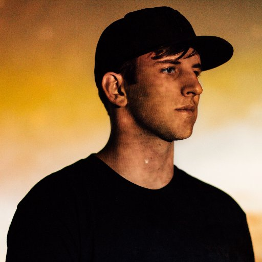

These are just some of the recent events, check out social media for more
About

In 2016, Illenium launched record label Kasaya Recordings in tandem with Seeking Blue. On February 15, 2016, Illenium released his debut studio album, Ashes as a free download via Kasaya Recordings and Mr. Suicide Sheep's label, Seeking Blue. The album peaked at number 6 on the Billboard Dance/Electronic Albums chart, and at number 19 on the Billboard Top Heatseekers chart. The album was made available on vinyl on March 25. Illenium later embarked on The Ashes Tour, which concluded on December 28. A remix album was released for Ashes on 16 December 2016.